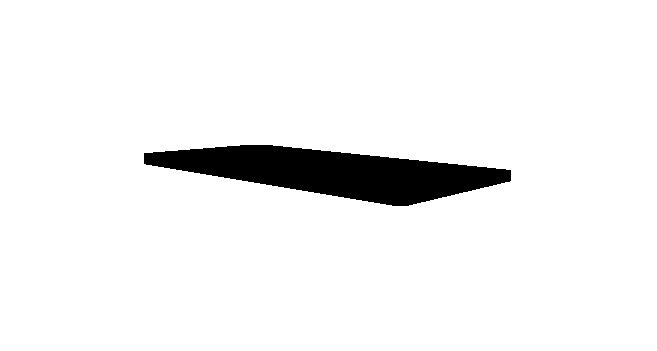

Riyadh's metro expansion and the tunnelling programs beneath the capital generate a continuous river of spoil - excavated muck that moves from shaft sites to disposal areas around the clock, much of it at night to keep the city's roads clear. That duty - short urban loops, night working, strict noise rules - is where an electric dump truck earns advantages diesel cannot match. The Dongfeng TZ3V, with the 600 kWh CATL LFP pack that tops the Dongfeng dump range and an 80 t GCW rating, is built for it. This guide covers the Riyadh metro case.
Metro spoil haulage runs shaft site to disposal area on loops of 10-30 km through urban roads, with loading by conveyor or excavator at the shaft and queuing at both ends. A TZ3V completes 5-7 cycles per shift; measured consumption on comparable Gulf tunnelling projects runs 3.2-3.7 kWh/km loaded with the empty return lighter. The 600 kWh pack covers a full 10-hour night shift with margin - and night is when this truck's advantages compound: near-silent operation through residential districts, zero idle burn in shaft-site queues, and no diesel exhaust at the bottom of a ventilation-managed shaft area.
Tunnel-muck moisture varies with geology and groundwater management; the TZ3V's heavy rock body and load distribution handle wet, dense spoil within rated payload, and the telematics' load logging supports the weight-compliance documentation that urban haulage permits require.
| Item | TZ3V specification | Metro relevance |
|---|---|---|
| Battery | CATL LFP 600 kWh | Full night shift on one charge |
| Motor | LvKong 550 kW peak | Loaded starts from shaft-site ramps |
| GCW | 80 t | Heavy wet spoil payloads |
| Noise | 65-70 dB working | Night haulage through residential areas |
| Charging | Dual-gun DC fast charge | Daytime depot charging for night work |
| Body | Heavy rock body, sealed tailgate option | Wet muck without spillage |
Riyadh's tunnelling contracts schedule spoil haulage into night windows precisely to spare the road network - and then face noise restrictions in the residential districts those roads cross. The TZ3Z-class diesel answer is acoustic enclosures and route compromises; the electric answer is a truck that passes a sleeping district at conversation level. Contractors report that the quiet fleet regularly wins extended working windows from the authorities - hours that translate directly into shaft-advance schedule. The second night benefit is thermal: cooler night air improves range 6-8% versus the day shift, and the liquid-cooled pack charges faster at the daytime depot after the morning return.
Riyadh summer days hit 45-48 C - the day-shift charging window runs hot, and the liquid thermal management holds charging speed where lesser systems derate. Shaft-site dust and the wash-down water around muck handling are handled by IP67 sealing and the filtration service schedule. Saudi infrastructure procurement - the metro programs included - increasingly writes emissions and noise performance into contractor evaluation, a trend covered on our Saudi Arabia electric truck market page.
Against a diesel tipper on the same shaft contract, the TZ3V saves 60-70% on energy - the night window's off-peak tariffs sharpen it further - and roughly half on maintenance. The noise-unlocked working hours add schedule value that penalty-clause tunnelling contracts price highly. On a multi-year metro package with 8-12 trucks, the operating saving reaches project-significant scale.
The TZ3V electric dump truck ships with GCC specification, Arabic documentation, depot charger packages and operator training from Shaanxi Fenghan Trading. Send your shaft locations, disposal routes and shift schedules for a per-cubic-metre haulage model against the diesel fleet.
Ready to electrify your fleet? Contact Shaanxi Fenghan Trading — authorized Dongfeng EV truck exporter. WhatsApp: +86 153 1943 1311 | Email: sales@fenghan-trade.com | dongfengevtrucks.com
🌐 Our Network: Fenghan Trade (SAGMOTO/SHACMAN Truck Export) · heavy duty mining dump truck 6x4 8x4